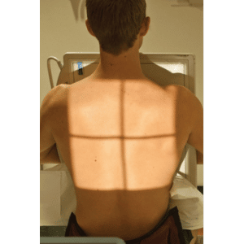
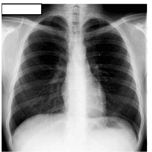
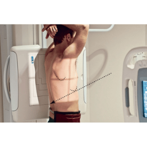
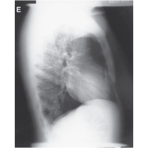

TÓRAX - PA
Paciente
Em ortostático, PA , PMS posicionado sobre a LCE, mãos nos quadris, ombros e cotovelos voltados para frente.
Chassis / Filme
35×35 / 35×43 transversal / longitudinal, em relação ao ombro.
Raio central
⊥ na horizontal, orientado para o centro do tórax. (nível T7).
DFF
1,80 m – com bucky.


Observação: Em apnéia após inspiração profunda.
TÓRAX - PERFIL
Paciente
Em ortostático; Em perfil, preferencialmente esquerdo, PMS paralelo LCE braços elevados sobre a cabeça.
Chassis / Filme
30X40 longitudinal, posicionado em relação ao ombro.
Raio central
⊥ na horizontal orientado para a lateral do tórax. (nível T7).
DFF
1,80 m – com bucky.


Observação: Em apnéia após inspiração profunda.